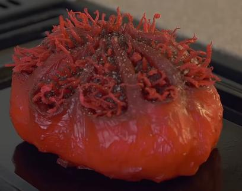

Flesh Nut Roast

Ingredients
- Flesh Nut
- Olive or Vegetable Oil
- Salt
- Black Pepper
Steps
- Preheat oven to 180 degrees
- Pull open nut's lips to reveal teeth and then use a fork to pry it open
- Cut all the tendrils with scissors and open the jaw
- Take out the inner part of the nut (seed)
- Pour watered down ketchup into the feeding hole of the seed to neutralize the poison
- Cut off the flesh of the seed and get the meat
- Spread oil on a baking tray
- Season the meat with salt and black pepper
- Put it in the oven for a hour and a half (if it is done it won't scream when poked)
Home